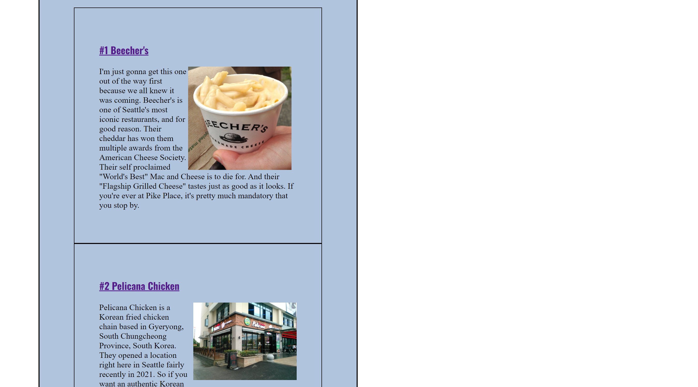

#1 Resume
This was a simple project from the very beginning of the quarter that essentially served as a quick introduction to coding and HTML. It's not the prettiest thing in the world. But it served as the foundation that we continued to build on throughout the class. I still always start coding by organizing the basic HTML tags just as I have in this project.
Web Project 1: Resume#2 Favorite Recipe
In this project, we started to learn the basics of CSS and how to use an internal CSS stylesheet. This is something that I never did before, even in my old intro to computer science class. So it was interesting getting to learn a new technique so early on. I also appreciated how Professor Rowley taught us about the pros and cons of internal vs external style sheets. Internal sheets are great when you only have one page. But for projects such as this, it's best to use an external style sheet anytime you have multiple pages.
Web Project 2: Single Page, 5 Sections#3 Favorite City
This is a project that expanded our knowledge of the CSS box model. A new requirement that we needed to incorporate was the CSS float property. For this, I decided to add floating to the images so that the text could wrap around them. I was attempting to create a layout similar to the front page of a newspaper. But the end result was a bit messier than I would prefer. I'll continue mastering the float property in future projects.
Web Project 3: Favorite City#3 Favorite Youtube Channels
For this project, we learned how to embed Youtube videos and adjust the size of each video. I really enjoyed this project, not just because it was simple and easy. But also because it answered a question I always wondered about as a kid. When you click the share button on Youtube, there's the usual options like Facebook, Instagram, etc. But one always stood out to me: "Embed". I remember clicking on this button by accident one time and being overwhelmed by a wall of code that I couldn't understand. I remember worrying that I accidentally messed up the family computer and closed the browser in a panic. Now, almost 20 years later, I finally learned what it was for and got to use it for my own website. It was fun to revisit that old sense of childhood wonder again.
Web Project 5: MultimediaResources
Images:
- 1, by Ryan Do, taken in 2024
- 2, by Ryan Do, taken in 2024
- 3, by Ryan Do, taken in 2024
- 4, by Ryan Do, taken in 2024
Fonts: